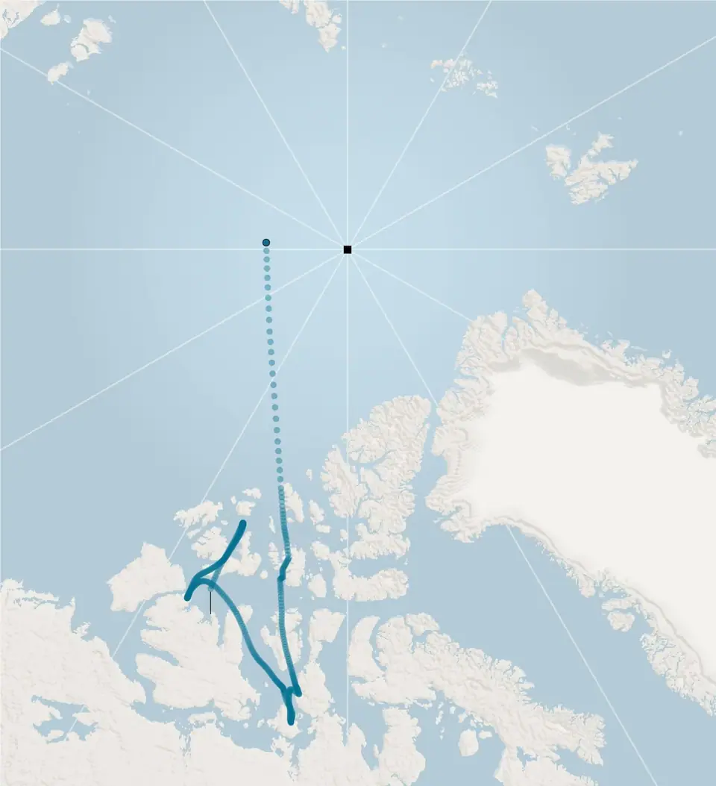
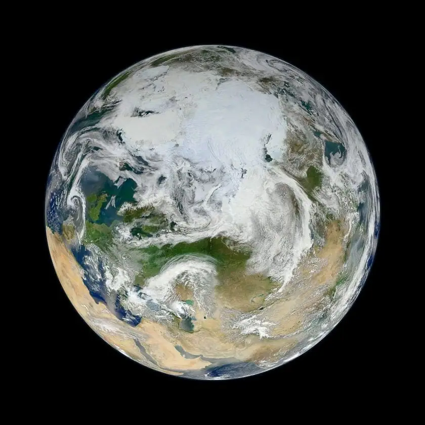

Articles ·
The North Magnetic Pole’s Mysterious Journey Across the Arctic
Scientists accelerated the update of a model of Earth’s fluctuating magnetic field, which is needed to keep navigational systems functioning. Many wondered what’s happening inside the planet’s core.
the New York Times – By Shannon Hall
The north magnetic pole is restless.
Distinct from the geographic North Pole, where all the lines of longitude meet at the top of the world, the magnetic pole is the point that a compass recognizes as north. At the moment, it’s located four degrees south of the geographic North Pole, which lies in the Arctic Ocean at 90 degrees north.
But that wasn’t always the case.
In the mid-19th century, the north magnetic pole floated much further south, roaming around Canada. For the past 150 years, however, the pole has been sprinting away from Canada and toward Siberia.
That change of address cannot be ignored, given that magnetic compasses still underpin modern navigation, from the systems used by civilian and military airplanes to those that orient your iPhone.
In 1965, scientists launched a data-based, mathematical representation of Earth’s magnetic field in order to better keep track of the pole’s ever-changing home. The World Magnetic Model is updated every five years — most recently in 2015 — because the magnetic field is constantly shifting.
In early 2018, it became clear that 2015’s edition was in trouble, because the pole’s Siberian stroll had picked up speed, rendering the model — and therefore a number of navigational systems — incorrect.
So for the first time, scientists have updated the model ahead of schedule, which they released Monday afternoon. Since this work was completed in the wake of the partial government shutdown (which delayed its full release), researchers still are trying to get a handle on the mysteries within Earth’s core that must be driving the magnetic pole’s surprising behavior.
Heading North
The north magnetic pole, the point on the Earth where a compass needle would point down, is sliding about 35 miles closer to Russia each year.

A continuous makeover
The north magnetic pole’s dizzying dance was first discovered nearly 400 years ago, when Henry Gellibrand, an English mathematician, realized that it had jumped hundreds of miles closer to the geographic pole over the course of 50 years.
“That was a big, monumental recognition that the field was not static, but dynamic,” said Andrew Jackson, a geophysicist at ETH Zurich.
It didn’t take long, however, before magnetic north flipped direction and started to move away from the geographic pole — demonstrating that the field is not just dynamic, it’s unpredictable.
“The problem that we’re still facing today is that we don’t have a good scheme to predict how the field will change,” Dr. Jackson said.
So scientists began tracking the ever-changing magnetic field. The first magnetic maps, which were hand-drawn by exploring sailors, revealed that for the next two centuries, magnetic north twirled among the many islands and channels of the Arctic Archipelago.
Then around 1860, it took a sharp turn and bee-lined toward Siberia. Since then, the pole has traveled nearly 1,500 miles and was most recently found in the middle of the Arctic Ocean, still en route to Russia.
Scientists attribute this wanderlust to the liquid iron sloshing within our planet’s outer core. That iron is buoyant — it rises, cools and then sinks. And that motion below carries Earth’s magnetic field with it, producing changes above.

To more accurately map those changes, scientists launched the precursor to the World Magnetic Model nearly 55 years ago, which began as a collaboration between the United States and the United Kingdom.
The map we know today has existed in its current form since 1990 and is created by an agency within the National Oceanic and Atmospheric Administration (NOAA) and the British Geological Survey (BGS). It’s commissioned by American and British military agencies, and used by many other militaries across the world.
Alongside GPS, navigational systems utilized by satellites, aircraft, ships, submarines and other vehicles rely on magnetic compasses to ensure they’re traveling in the correct direction. Perhaps the most visible sign of this can be found at the end of every airport runway, where large white numbers reflect the runway’s magnetic heading.
But as the magnetic field shifts, those headings change and runways get a makeover. Later this year, for example, the runways that make up the Dwight D. Eisenhower National Airport in Wichita, Kan., will receive new names that match their new headings. The process — which includes repainting the huge numbers at the end of each runway and replacing other signage — will likely cost several hundred thousand dollars.
And it all depends on the World Magnetic Model, which is not easy to build. Unlike the kilogram or the second, the magnetic field cannot be defined once and then used for decades.
“The magnetic field is constantly changing,” said Susan McLean, the retired chief of the geophysical sciences division at NOAA, who helped set the magnetic model in the past. “It changes with time. It changes with location. And it changes the way it changes.” Tracking the planetary magnetic field, she added, is more akin to forecasting the weather.
And like the weather, perfectly predicting where the pole will move is downright impossible. But scientists can get close with a wealth of data collected from satellite and ground-based observatories. That data allows them to deduce how the magnetic field has changed over the past several years and to extrapolate into the future with a model that will — hopefully — remain accurate for the next five years.
The pole’s pilgrimage
After scientists released the World Magnetic Model in 2015, they periodically checked it against field measurements to ensure that it was accurately predicting variations in Earth’s magnetic field. When they ran that check in early 2018, they discovered that the model and reality were out of alignment.
“We noticed that the error in the Arctic was increasing faster than what we would expect,” said Arnaud Chulliat, a geophysicist at the University of Colorado at Boulder and NOAA.
Although the north magnetic pole has long been scurrying away from Canada and toward Siberia, the rate at which it moves drastically changes. Throughout most of the 20th century, it drifted at roughly 6 miles per year. In the 1980s, magnetic north picked up speed, and by the year 2000 it was traveling at 35 miles per year on the way out of Canada.
Then, in 2015, the pole actually slowed to 30 miles per year. So when the team issued the most recent magnetic map, scientists predicted that the speed would continue dropping — only it didn’t.
Just after the model was released, the north magnetic pole picked up momentum again, and now it is fluctuating at around 35 miles per year. In late 2017, the pole crossed the international date line into the Eastern Hemisphere.
“It’s not the fact that the pole is moving that is a problem, it’s the fact that it’s accelerating at this rate,” said William Brown, a geophysicist at the British Geological Survey. “The more acceleration or deceleration there is, the harder to predict where the thing is going to be.”
And that means the model is currently incorrect — at least, in the Arctic.
While many of us might not spend much time — or any time — at the top of the world, some international airline flights fly close to the geographic North Pole. They need the magnetic model to be accurate for safe journeys.
If you were to use the current model to travel to the north magnetic pole, you would end up 25 miles away from where the pole actually resides.
So scientists raced to fix the model by feeding it several years of recent data. Together, B.G.S. and NOAA have made a new version available. But efforts to finish the revision on publicly available online systems maintained by NOAA were delayed by the partial government shutdown in the United States. The researchers were able to complete the update on Monday.
The public maps will have many uses, from recalculating runway names to ensuring that Defense Department systems are properly installed. Engineers incorporate the model into the navigation systems on your smartphone and in your car, Dr. Brown said.
But for most people at low- and mid-latitudes, the current model is safe to use.
“South of 65 degrees north and away from Canada, the average user will notice very little difference to their daily life,” said Ciaran Beggan, a geophysicist at B.G.S.
Geomagnetic apocalypse? Probably not
With the updates now complete, scientists are anxious to understand the causes of the pole’s Siberian sprint. “It’s clear that something strange is happening,” said Phil Livermore, a geophysicist at the University of Leeds in England.
On multiple occasions during Earth’s long history, the magnetic field has weakened dramatically. The north magnetic pole slipped toward the bottom of the planet, and the south magnetic sauntered toward the top. The process took a few thousand years, but by the time the field’s full strength returns, it has flipped.
The pole’s recent journey, along with other changes — like a weakening of Earth’s magnetic field — has led some scientists to wonder whether such a reversal might be around the corner, geologically speaking.
“It does tick off some of the boxes of magnetic reversal,” said Courtney Sprain, a geophysicist at the University of Liverpool in England, who added that, “we definitely can’t say that for sure.”
Most scientists, including Dr. Sprain, doubt an impending geomagnetic reversal. First, while the north magnetic pole does appear to be on the move, it doesn’t represent a global phenomenon, just a regional one.
Dr. Livermore, for example, thinks there are two large magnetic structures in the planet’s outer core, one beneath Canada and one beneath Siberia, which interact together to emit the magnetic pole.
The Canadian patch is weakening, which means that it’s essentially losing a tug-of-war, causing the north magnetic pole to turn toward Siberia. At the same time, the south magnetic pole is standing relatively still.
Second, while Earth’s magnetic field is weakening, many experts argue that it’s still above the long-term geologic average.
Peter Olson, a geophysicist at Johns Hopkins University, thinks that the current changes represent a transient fluctuation and not a reversal.
“It’s the analogy between a stock market correction and a worldwide depression,” he said. “How do you know the stock market today is not heading toward a worldwide depression, a crash? Well, it could be. But much more likely, it’s a correction and it will rebound.”
Even if the magnetic field were on the edge of a flip, scientists argue that it’s not an apocalyptic scenario. Although the field provides essential protection from the sun’s powerful radiation, fossil records reveal no mass extinctions during past reversals.
And whatever the risks to power grids and communications, humanity would have ample time to prepare.
“Of all the problems we have, this is not a top 10 problem,” said Dr. Olson.
Migrated from the AUASS website archive as published, with the formatting tidied.